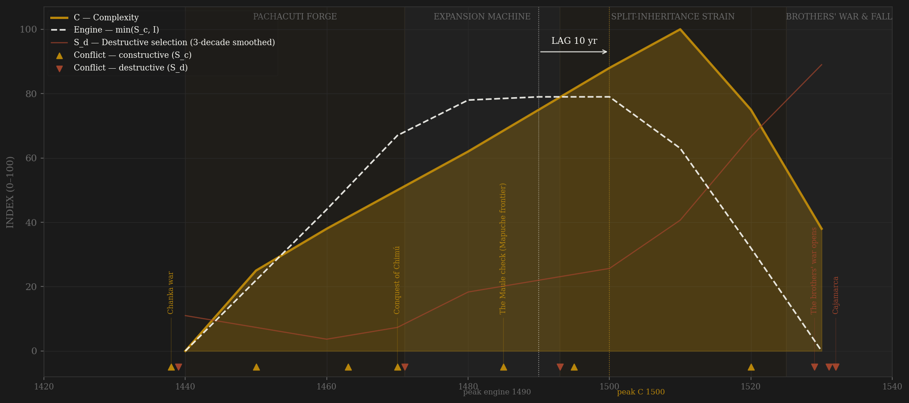
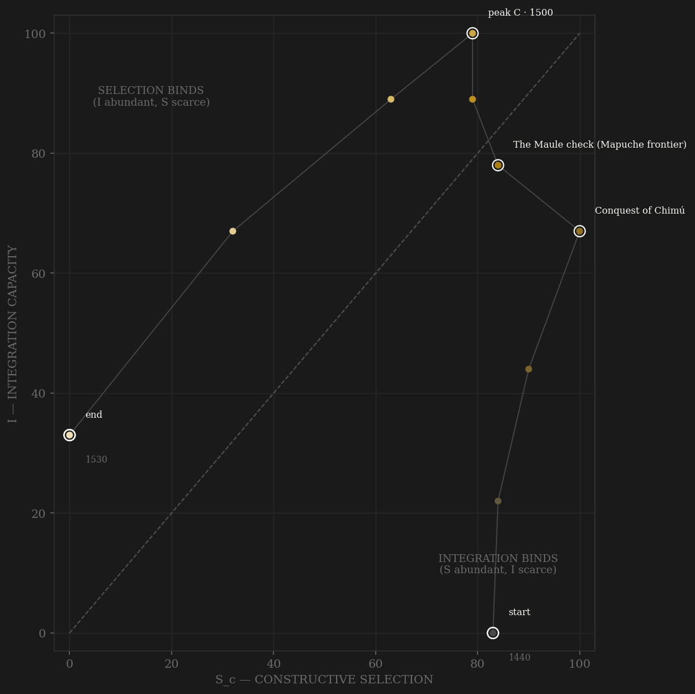

Tawantinsuyu is the second of the sample's two Eurasia-free polities, and the more remarkable machine: an empire of ten million administered without writing, wheels, money or markets — roads, waystations, relay runners, storehouse fields and knotted-cord accounting substituting for all four. Its integration is the best-attested thing about it, and attested the right way: not by chroniclers but by the ground — ~40,000 km of Qhapaq Ñan surveyed (Hyslop; UNESCO), ~497 storehouses excavated at Huánuco Pampa alone (Morris & Thompson), ~2,400 at Cotapachi, khipu accounts that match early Spanish tribute records. The selection engine is stranger and it is the exhibit here: split inheritance (Conrad & Demarest; D'Altroy) gave a dead Sapa Inca's panaqa corporation ALL his estates in perpetuity, so each successor inherited the title asset-poor and had to conquer his own patrimony — a structural motor that drove three generations of expansion (Chimú taken ~1470, Quito, Chile to the Maule) and a rentier trap that loaded with every reign: by Huayna Capac's day the dead kings' corporations crowded the Cuzco valley and the living king borrowed retainers. Meanwhile the middle ranks ran a deliberate entry machine — conquered lords' sons schooled at Cuzco and returned as administrators, yanakuna rising by service to governorships — under an apex sealed to the royal lineages. The v2 engine peaks in the 1490s–1500s; complexity answers at +10 to +20 depending on protocol, on the edge of the window, and is RIGHT-CENSORED: the 1510s row is peak C with no endogenous decline observed — this system was cut, not exhausted. The cut has two blades and the ledger separates them. First the endogenous one: the ~1524–28 epidemic (running overland ahead of any Spaniard) kills king and designated heir at once, designation fails, two courts crown two kings, and Huascar moves against the dead kings' estates — the rentier trap triggering the brothers' war, the empire's own coordination machinery tearing itself apart from Tumipampa to Cuzco. Then the exogenous one: Cajamarca, November 1532 — Pizarro seizes an apex the empire had already half-decapitated. The framework has standing to explain the first blade. It predicts nothing about the second.

The trajectory is integration-led from the first decade: Pachacuti rebuilds Cuzco and lays trunk roads while the ladder is still assembling, and the path climbs the I axis faster than S for its whole life — by the 1490s the polity sits deep in selection-binds territory, integration near maximum while contestability plateaus and then sags as the panaqa blocs harden. That corner position is the split-inheritance signature: a machine that converts conquest into infrastructure at maximum efficiency while the apex contest narrows to two lineage parties. The end is a vertical fall down BOTH axes at fixed catastrophe — 1520 and 1530 drop the path from (63, 89) to (0, 33) in two rows, the steepest terminal segment in the sample: the brothers' war consumes selection and integration together because the armies fight along the very roads that were the integration. Compare Babylon (I held high by the conqueror while S drains) — here the conquest arrives too late to hold anything: the machine was already eating itself when Pizarro found it.
Coded by locus and target, never by outcome — and this ledger's job is to keep two catastrophes apart. The HUASCAR–ATAHUALPA WAR (1529–32) is ENDOGENOUS S_d: succession-by-designation failed under a double royal death, the panaqa corporations chose sides, and the trigger was Huascar's threat to strip the dead kings' estates — the split-inheritance rentier trap detonating exactly as the mechanism predicts. Tumipampa razed, the Cañari massacred, Cuzco taken, Huascar's family exterminated before his eyes: the machinery attacking itself at full scale. CAJAMARCA (Nov 1532) is EXOGENOUS decapitation (Babylon precedent, exclude-flagged): steel, horses and the pathogen advance guard are outside the framework's prediction set. Chronicler bias is structural here — there is no pre-conquest text at all: Sarmiento wrote in 1572 to justify conquest, Betanzos married into Atahualpa's faction, Garcilaso wrote Cuzco nostalgia; the civil-war coding leans on the skeleton attested across mutually hostile traditions, the Rowe chronology is flagged as ±20–30yr (radiocarbon pushes expansion earlier), and the bias-resistant anchors are the ones nobody wrote as narrative: excavated storehouses, surveyed roads, khipu counts that match the early visitas.
| YEAR | CONFLICT | CODE | CODING RATIONALE |
|---|---|---|---|
| 1438 | Chanka war | Sc | The founding external contest at existential intensity: Cuzco nearly overrun, Viracocha flees, Cusi Yupanqui stands and wins the fringe as Pachacuti — external locus (the victory legend is dynastic self-portrait; Rowe chronology per Cabello Valboa, flagged) |
| 1439 | Deposition of Viracocha & killing of Inca Urco | Sd | The designated heir destroyed by the victorious brother — internal apex violence riding the founding victory (small residue; dated by the Rowe frame; separate ledger row from the Chanka war, one arc annotation) |
| 1450 | Colla-Lupaca wars | Sc | The altiplano's rival lordships contested and taken — external peer contest on the Titicaca plateau |
| 1463 | Topa Inca's northern campaigns | Sc | The heir-designate tested in command — Chachapoyas, the Quito road: external conquest contest doubling as succession apprenticeship (designation-in-action) |
| 1470 | Conquest of Chimú | Sc | The one true peer state on the continent — coastal, hydraulic, urban — taken by cutting its canals and digesting its bureaucracy: peak external contest, integration warfare |
| 1471 | Colla revolt at Topa Inca's accession | Sd | Subject provinces rise inside the imperial fabric at the succession — internal locus (the accession itself stayed within rules: Amaru Topa passed over peacefully, scored in channel C not here) |
| 1485 | The Maule check (Mapuche frontier) | Sc | The frontier where the machine stopped — a tribal confederation the imperial army could not fix; external locus; the southern analogue of the Aztecs' Tarascan wall |
| 1493 | Huallpaya's attempted coup | Sd | The regent moves to seize Huayna Capac's succession and is executed — an armed conspiracy at the apex, crushed fast: the designation machinery still adjudicating, but by blood this once |
| 1495 | Ecuador grind (Cañari, Caranqui) | Sc | Decades of hard frontier war — external locus; Yahuarcocha's brutality loads on E; the strategic product is a professional northern army loyal to its commander-king: the civil war's instrument forged by the external contest |
| 1520 | Chiriguano incursions | Sc | Armed Guaraní migration probes the southeastern frontier — the empire now defends more than it takes; external locus, minor |
| 1529 | The brothers' war opens | Sd | ENDOGENOUS: designation fails under the double royal death (epidemic ~1528); Cuzco crowns Huascar, the Quito army backs Atahualpa; Huascar threatens the dead kings' panaqa estates — the split-inheritance rentier trap triggering open war (Conrad & Demarest's mechanism on schedule) |
| 1531 | Tumipampa razed; Cañari massacred | Sd | Atahualpa's army destroys the second Cuzco and near-exterminates the province that backed the other king — the empire burning its own administrative machinery |
| 1532 | Quizquiz takes Cuzco — Huascar's line exterminated | Sd | The endogenous climax: the capital falls to the northern army, Huascar captured, his family and household killed before his eyes, his panaqa allies purged (Hemming; Cieza) — same-year ledger row as Cajamarca, one arc annotation (Dutch 1672 precedent) |
| 1532 | Cajamarca | Sd | EXOGENOUS decapitation, exclude-flagged (Babylon precedent): Pizarro's 168 men seize Atahualpa at parley, mid-victory-progress — steel, horses and the pathogen advance guard are outside the framework's prediction set; post-conquest resistance (Manco 1536, Vilcabamba) excluded |
| COMPONENT | GRADE | BASIS |
|---|---|---|
| S_c — channel A, elite-entry (0.40) | ○ scholar-coded | Yanakuna service-elevation to estate and provincial posts; curaca-son schooling at Cuzco — hostage and ladder in one institution (Rowe 1946; D'Altroy ch.9); mitmaq resettlement managers; 'Inca by privilege' breadth. APEX CLOSED: panaqa royal corporations monopolize top offices; SPLIT INHERITANCE (Conrad & Demarest 1984; D'Altroy chs.4–5) = the showcase — dead kings keep everything, each successor starts asset-poor: structural engine + built-in rentier trap. No throughput series exists (no writing) |
| S_c — channel B, peer rivalry (0.30 HARD CAP) | ○ scholar-coded | Rowe-frame campaign chronology: Chanka war ~1438 (founding), Colla/Lupaca, Chimú ~1470 (the one true peer), Ecuador/Quito grind, Chile to the Maule + Mapuche check, Chachapoyas/Antisuyu. Civil war and Cajamarca excised to S_d by locus |
| S_c — channel C, within-rules contest (0.30) | ○ scholar-coded | Hanan/hurin dual-organization office balancing at every level (Rowe; D'Altroy); council of the four suyu apus; succession by designation-and-test — settled within rules 1471 and 1493. DECAY: designation fails ~1528 (king and heir die together); two courts, no procedure |
| Sc_v1_combat (frozen synthetic) | ○ scholar-coded | Channel B alone (external-war-only, the prior definition's operative content) — synthesized per the straight-to-v2 rule (Mughal/Gupta/Athens precedent); no v1 page ever existed |
| S_d — Destructive | ○ event-anchored | Dated: 1438–39 Inca Urco, 1471 Colla revolt, 1493 Huallpaya conspiracy, episodic panaqa purges (○ conservative), 1529–32 civil war (endogenous — Tumipampa, Cañari, Cuzco, the exterminations), Cajamarca 1532 (exogenous, exclude-flagged). Post-conquest resistance excluded |
| I — Integration | ◐ ARCHAEOLOGICALLY MEASURED extent + ○ intensity | THE ROSTER'S PUREST STATE-BUILT INTEGRATION MACHINE, measured on the ground: ~40,000 km Qhapaq Ñan (Hyslop 1984; UNESCO 2014), tambo chain ~1–2k surveyed, chaski relay (Cuzco–Quito under a week); qollqa EXCAVATED AND COUNTED — Huánuco Pampa ~497 (~37,000 m³, Morris & Thompson 1985), Mantaro valley counts (D'Altroy 1992), Cotapachi ~2,400; khipu decimal administration cross-attested by early visitas (Murra; Urton); mit'a circulation, mitmaq transplants, vertical-archipelago redistribution (Murra 1972). Extent measured; between-anchor intensity ○ |
| C — Complexity | ◐ archaeological anchors + ○ blend | Cuzco imperial masonry (Coricancha, Sacsayhuamán); planned administrative cities stamped from the center (Huánuco Pampa ~4,000 buildings; Tumipampa; Hatun Xauxa); Machu Picchu dated ~1450s–60s (Pachacuti's estate); Moray/Tipón terrace-irrigation engineering; Chimú metallurgy absorbed; ceque system (328+ huacas as administrative-ritual geography). RIGHT-CENSORED at peak — cut, not exhausted |
| E — Entropy | ○ scholar-coded | The split-inheritance fiscal ratchet — each reign starts asset-poor while the dead hold the best land (Conrad & Demarest; D'Altroy): structural entropy rising with every accession, driving expansion into worse marginal returns (Ecuador's decades, the Maule stop, the forest frontiers); revolt suppression; the ~1524–28 epidemic wave (exogenous, flagged — kills Huayna Capac + heir ahead of any contact); civil-war destruction |
| R — Renewal (population) | ○ order-of-magnitude | Subject population in MILLIONS raw (imperial convention): ~0.5M → ~10M at peak (conventional mid-range; estimates 6–14M — Cook 1981; D'Altroy ch.4), falling before Cajamarca via epidemic + civil war. Shape only |
10 decade rows 1440–1530 (decade D covers D..D+9: the Chanka war and Pachacuti's accession ~1438 are narrated in the 1440 founding row — the empire begins as a going concern mid-crisis; Chimú in 1470; Huayna Capac's 1493 accession in 1490; his death ~1528 and the war's outbreak in 1520; Quizquiz's capture of Cuzco and Cajamarca Nov 1532 in the terminal 1530 row) built by scripts/build_inca_sicre.py — a straight-to-v2 contestability build (AMENDMENT_S_definition_v2.md): Sc_constructive = 0.40 elite-entry (yanakuna/curaca-schooling entry machine under a panaqa-closed apex; split inheritance = the channel-A showcase) + 0.30 peer rivalry (hard cap; Chanka→Chimú→Maule, locus-cleaned) + 0.30 within-rules contest (dual organization, suyu council, designation succession); Sc_v1_combat = channel B alone per the straight-to-v2 rule. Channel ledger: data/raw/inca/coding_ledger_v2.csv; audit: components_audit.csv; source map + chronicler-bias ledger: data/raw/inca/SOURCES.md. INDEPENDENCE TEST: one of two roster polities (with the Triple Alliance) with ZERO Eurasian contact — the integration machine here (road+tambo+chaski+qollqa+khipu, no writing, no wheel, no markets) evolved with no input from any other case in the sample; a fully independent replication of the S×I framework, which is this composite's scientific value (no pooled statistic computed — sealed preregs). FROZEN-PROTOCOL LAG UNDER BOTH DEFINITIONS (3-decade centered rolling mean, engine=min(Sc,I)): v2 engine 1490 → C 1500 = +10 SIMULTANEOUS; v1 (combat-only) engine 1490 → C 1500 = +10 SIMULTANEOUS — the definitions agree here (rare; Mughal/Tokugawa precedent) because integration, not the S definition, is the binding series. SHORT-SERIES CAVEAT (Athens precedent): 10 rows is the joint-shortest series in the sample with the Aztec — one smoothing window spans ~30% of polity life, peak locations are coarse; UNSMOOTHED sensitivity: v2 engine 1490 → C 1510 = +20 PASS; v1 unsmoothed 1480 → 1510 = +30 PASS — the smoothed SIMULTANEOUS and unsmoothed PASS straddle the |20yr| boundary: at this resolution the honest statement is 'engine peak and C peak are one to two decades apart, direction right', not a sharp verdict. CONQUEST ENDPOINT — TWO BLADES DRAWN APART (the ledger's key distinction): the 1529–32 HUASCAR–ATAHUALPA CIVIL WAR is ENDOGENOUS S_d — designation failed under the epidemic's double royal death and Huascar's move against the dead kings' panaqa estates detonated the split-inheritance rentier trap (the framework's business, and its exhibit); CAJAMARCA Nov 1532 is EXOGENOUS decapitation (Babylon precedent) — Pizarro walked INTO the catastrophe, and the terminal row is coded for the death-shape but EXCLUDE-FLAGGED; C is RIGHT-CENSORED (peak C on the 1510 row, no endogenous decline observed — cut, not exhausted); the ~1524–28 epidemic is exogenous and flagged, though the succession collapse it detonated was endogenous machinery failure. CHRONOLOGY CAVEAT: all narrative chronology is post-conquest and Spanish-filtered (Sarmiento 1572 wrote to justify conquest; Betanzos carries Atahualpa-faction spin); the Rowe frame (via Cabello Valboa) is kept as the ledger spine with ±20–30yr flagged (radiocarbon pushes expansion earlier — Ogburn); the ◐ anchors (excavated qollqa, surveyed roads, khipu-visita correspondences) had no conquest to justify. ○-GRADE HALO CAVEAT applies to the scholar-coded politics channels; the measured-I backbone partially insulates the engine. Rebuild: ~/grove/venv/bin/python ~/vitalic.stoicism/scripts/build_inca_sicre.py, then polity_report.py --slug inca